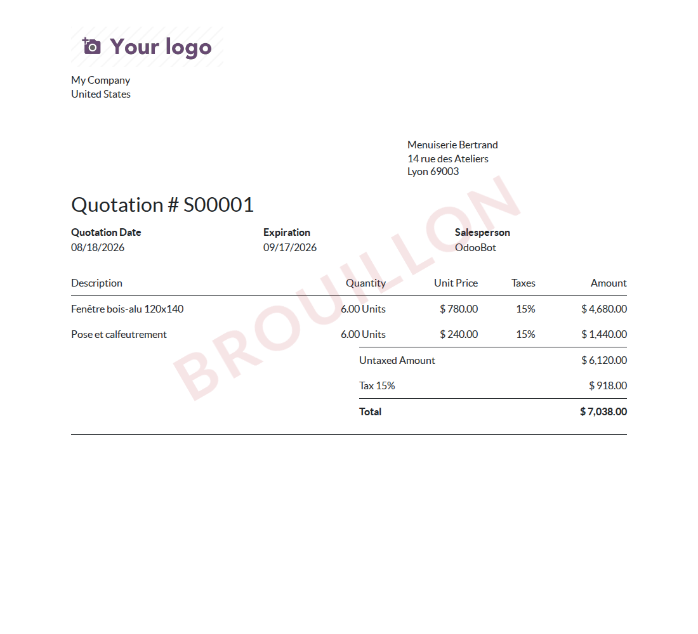
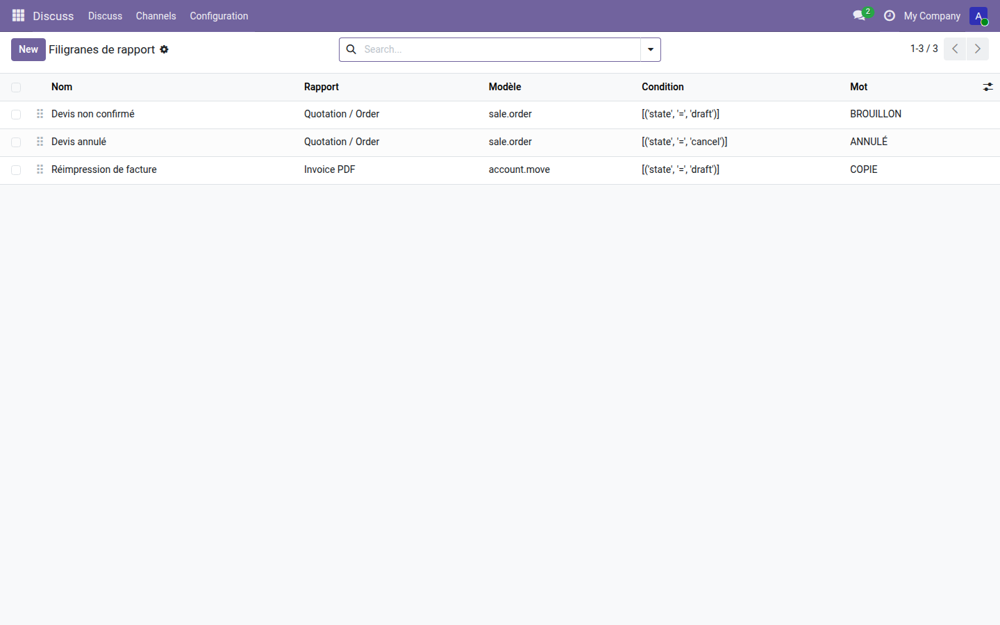

BROUILLON, COPIE, ANNULÉ — sur n'importe quel rapport, et sur toutes ses pages.
Un devis non confirmé, une facture annulée et une réimpression sortent de l'imprimante avec exactement la même allure que le document valide. Le client ne peut pas les distinguer, et personne au bureau non plus une fois la feuille posée sur une pile. Odoo 19 ne propose aucun filigrane : le seul du dépôt sert à marquer ses propres documents de démonstration, en interne, et n'est ouvert à personne.
Un devis en cours de rédaction porte son mot en travers, sans rien masquer des montants ni des lignes. Confirmé, il s'imprimera nu — c'est la condition de la règle qui décide, pas l'utilisateur.

Trois règles, trois rapports, trois conditions. Elles se réordonnent à la souris : quand plusieurs acceptent le même document, la première l'emporte.

Marquer un document est un début ; le faire signer en est la suite. La gamme OdooSkills propose la signature électronique avec certificat et empreinte, la gestion documentaire, et le dépôt de pièces par le client depuis son portail. Catalogue complet : apps.odooskills.com.
Licence LGPL-3 — compatible Odoo 19.0 Community et Enterprise. Support : support@odooskills.com.